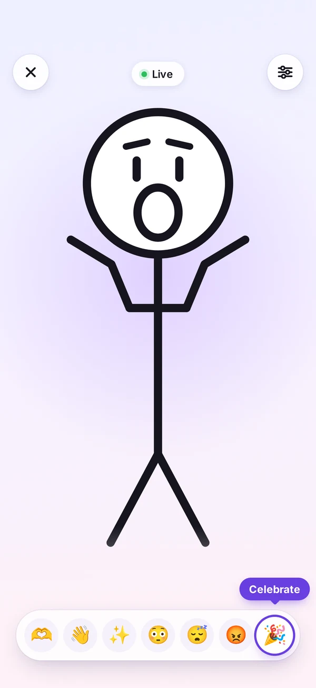
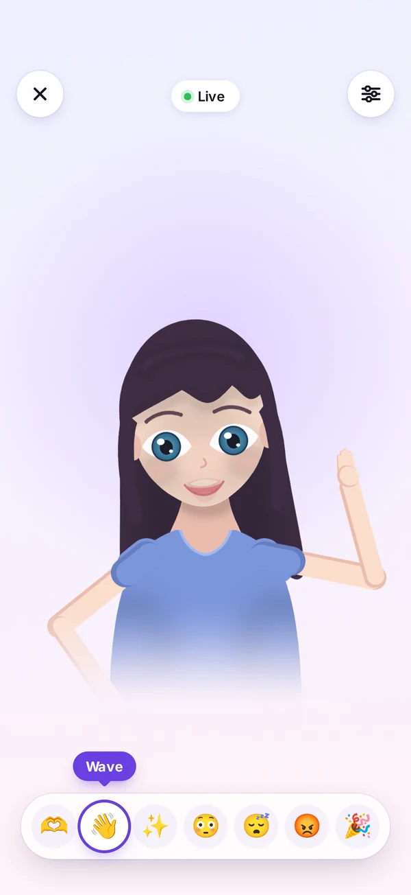
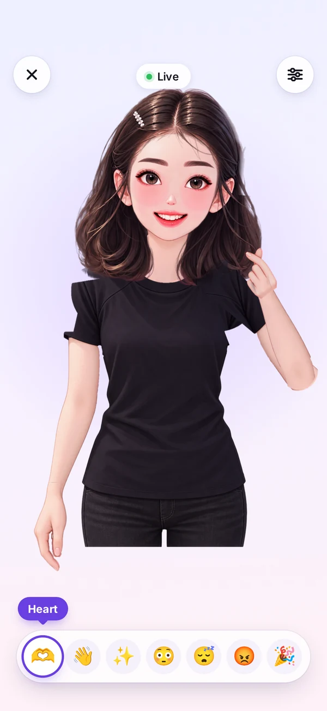
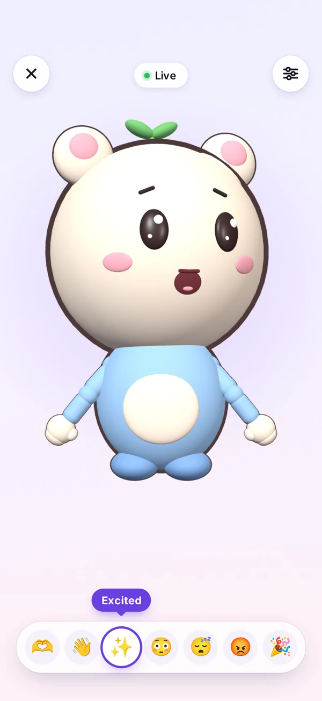
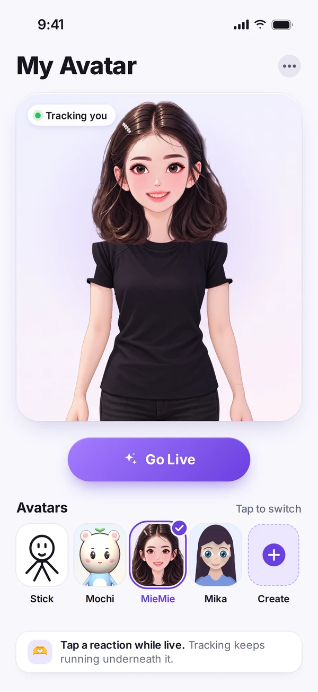

正在看你
动动鼠标，她在看着你。点她一下试试。
功能亮点
专注一件事，
把它做好。

01起点
一切从一个火柴人开始。
一个圆、两个点、一条线——这是随影的第一个角色。它验证了最初的想法：你的眨眼、眉毛、嘴型和歪头，都能实时画出来。火柴人至今仍在 App 里，也是看清面部追踪最直接的方式。
- 眼睛、眉毛和嘴巴实时跟随你
- 点 🎉 庆祝，双手高高举起
- 线条干净，任何尺寸都清晰

02一幅画
然后，线条变成了一幅画。
Mika 用简洁的形状和平涂色彩画成，再拆成一个个部件——眼睛、眼皮、眉毛、三种嘴型、前后两层头发，以及带关节的手臂——每一块都能单独动起来，由你的表情来驱动。
- 会眨眼，眼神跟着你走
- 关节手臂：点 👋 她就挥手
- 五种手势，从张开手掌到比耶

03分层 2D
接着，她成了一个精绘的 2D 角色。
MieMie 以完整细节绘制，拆成 36 个图层：睫毛、虹膜和眼皮，三种嘴型，会在脑后摆动的头发，还有七种姿势的手。点一下 🫶，她就比出指尖爱心，同时继续跟着你眨眼、说话。
- 36 个图层，配有真实的手臂骨骼
- 七种手势，包括指尖比心
- 反应动作叠加在实时追踪之上

043D
现在，Mochi 和 Taro 来到了 3D。
Mochi 是随影的第一个 3D 角色：圆圆的脸，一对小熊耳朵，头顶一棵小芽，由柔和的 3D 形状搭成，像玩具一样打光。你一转头，Mochi 就在真正的立体空间里转过来，眼睛、眉毛和嘴巴依然跟着你。随后加入的 Taro 是一只圆滚滚的桃色虎斑猫：你一扬眉，它就竖起耳朵；你一笑，它就眯起眼睛，尾巴也跟着摇。
- 随你转头，在 3D 空间里转动
- 手臂移动时会自动避开头和身体
- 同样的七种反应，🫶 会冒出一颗 3D 爱心

05全员到齐
一个角色栏，一键切换。
首页把所有角色放在同一排：火柴人、Mochi、Taro、MieMie 和 Mika。选一个，点 Go Live 就开播，切换角色也不会重启摄像头。
- 切换角色，无需重启摄像头
- 每个角色都有同样的七种反应
- 2D 与 3D 角色并排可选
实时面部追踪
TrueDepth 机型用 ARKit，其他 iPhone 用 Apple Vision：眨眼、张嘴、微笑、眉毛、视线和头部姿态都能捕捉。
利落又平稳
先快速校准你的自然表情，再对每个通道单独平滑：眨眼干脆利落，头部动作平稳自然。
画面不出手机
每一帧画面只在内存中变成几个数值，随即丢弃；不存储、不上传任何人脸图像。
详细信息
- 类别
- 摄影与录像
- 系统要求
- 带前置摄像头的 iPhone；支持面容 ID 的 TrueDepth 机型追踪效果最佳。
- 开发者
- 4M Studio
- 网站语言
- English · 中文